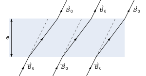

TD5 : Milieux magnétiques
1 Introduction
Dans la plupart des matériaux soumis à un champ magnétique, les charges liées se déplacent à l'échelle atomique faisant apparaître des boucles de courant i.e. des dipôles magnétiques : le milieu s'aimante. Ainsi, l'aimantation \(\vv{M}\) d'un matériau correspond à la densité volumique de moment magnétique \(\vv{m}\) soit
\begin{align*} \vv{M}=\frac{\d\vv{m}}{\d\tau} \end{align*}Pour rappel, le moment dipolaire magnétique \(\vv{m}\) d'une boucle de courant est égale à \(\vv{m}=I\times\vv{S}\).
On peut alors introduire une densité de courant liés (ou d'aimantation) \(\vv{j}_\text{liés}\) correspondant au rotationnel de l'aimantation
\begin{align*} \rot\vv{M}=\vv{j}_\text{liés} \end{align*}L'équation de Maxwell-Ampère devient
\begin{align*} \rot\vv{B}&=\mu_0\left(\vv{j}_\text{libres}+\vv{j}_\text{liés}\right)\\ \rot\vv{B}&=\mu_0\left(\vv{j}_\text{libres}+\rot\vv{M}\right)\\ \rot\left(\frac{\vv{B}}{\mu_0}-\vv{M}\right)&=\vv{j}_\text{libres}\\ \rot\vv{H}&=\vv{j}_\text{libres} \end{align*}où \(\vv{H}=\frac{\vv{B}}{\mu_0}-\vv{M}\) est le vecteur d'excitation magnétique dont l'unité est l'Ampère par mètre.
Le théorème d'Ampère généralisé s'écrit
\begin{align*} \oint_\mathcal{C}\vv{H}.\vv{\d\ell}&=\iint_{\mathcal{S}}\vv{j}_\text{libres}.\vv{\d S}=\Upsigma I_\text{libres}^\text{enlacés} \end{align*}Les relations de passage demeurent inchangées pour ce qui concerne la composante normale du champ magnétique \(\vv{n}_{1\to2}.\left(\vv{B}_2-\vv{B}_1\right)=0\). La composante tangentielle devient \(\vv{n}_{1\to2}\times\left(\vv{H}_2-\vv{H}_1\right)=\vv{j}_{S,\text{libres}}\).
Il existe plusieurs types de milieux magnétiques en fonction de la relation liant l'aimantation au vecteur excitation. Les milieux diamagnétiques et paramagnétiques ont une aimantation \(\vv{M}\) directement proportionnelle à \(\vv{H}\) par la relation \(\vv{M}=\chi_m\vv{H}\) où \(\chi_m\) est la susceptibilité magnétique. Le champ magnétique dans ces matériaux se réduit à \(\vv{B}=\mu\vv{H}\) où \(\mu\) est la perméabilité magnétique du matériau i.e. \(\mu=\mu_r\mu_0\) (\(1+\chi_m=\mu_r\)). Les valeurs caractéristiques de \(\mu_r\) sont voisines de 1 pour les milieux dia et paramagnétiques, \(\chi_m\) étant négatif et de l'ordre de 10-9 pour les milieux dia. et voisin de 10-4 pour les milieux para.
Dans le cas de matériaux ferromagnétiques, \(\chi_m\gg1\), l'aimantation n'est plus proportionnelle à l'excitation magnétique \(\vv{M}\neq\chi_m\vv{H}\).
2 Plaque magnétique
Une plaque d'épaisseur \(e\) est constituée d'un matériau magnétique linéaire, homogène isotrope (LHI) de susceptibilité \(\chi\). On supposera en plus que ce matériau est un isolant électrique. La plaque est placée dans un champ magnétique extérieur \(\vv{B}_0\) uniforme. On note \(\vv{B}_{0\parallel}\) et \(\vv{B}_{0\perp}\) les composantes de \(\vv{B}_0\) parallèle et perpendiculaire à la plaque.
- On suppose que la plaque s'aimante uniformément. Dans quel plan est l'aimantation \(\vv{M}\) ?
- Calculer \(\vv{M},\vv{B}\) et \(\vv{H}\) dans la plaque.
- Tracer les lignes de champ dans les cas :
- d'un milieu diamagnétique.
- d'un milieu paramagnétique.
- d'un ferromagnétique linéaire.
- On considère une plaque magnétique linéaire, homogène et isotrope soit \(\vv{M}=\chi_m\vv{H}=\chi_m\frac{\vv{B}}{\mu}\). Le vecteur aimantation est donc un pseudo-vecteur comme le champ magnétique et appartient donc aux plans d'antisymétrie de la distribution de courant. On déduit que \(\vv{M}\) est contenu dans le même plan que \(\vv{B}\).
À l'extérieur de la plaque, \(\vv{B}=\vv{B}_0\), \(\vv{H}=\frac{\vv{B}_0}{\mu_0}\) et \(\vv{M}=\vv{0}\). À l'intérieur de la plaque, l'aimantation étant uniforme, le champ magnétique est donc constant. On utilise les relations de passage pour calculer les composantes normale \(\vv{B}_{i\perp}\) et tangentielle \(\vv{B}_{i\parallel}\) du champ magnétique. Ainsi, à l'interface plaque-vide, nous avons
\begin{align*} \vv{B}_{\text{ext.}\perp}-\vv{B}_{\text{int.}\perp}&=\vv{0}\\ \vv{H}_{\text{ext.}\parallel}-\vv{H}_{\text{int.}\parallel}&=\vv{j}_{S,\text{libres}}\times\vv{n}=\vv{0}\text{ (pas de courants libres)}\\ \frac{\vv{B}_{0\parallel}}{\cancel{\mu_0}}-\frac{\vv{B}_{i\parallel}}{\mu_r\cancel{\mu_0}}&=\vv{0} \end{align*}Les champs à l'intérieur de la plaque sont ainsi
\begin{align*} \vv{B}_i&=\vv{B}_{0\perp}+\mu_r\vv{B}_{0\parallel}\\ \vv{H}_i&=\frac{\vv{B}_i}{\mu_r\mu_0}\\ \vv{M}_i&=\chi_m\vv{H}_i=\chi_m\frac{\vv{B}_i}{\mu_r\mu_0} \end{align*}- milieu diamagnétique
\(\mu_r\lesssim1\to|\chi_m|\ll1\) et \(\chi_m<0\). Typiquement, \(\chi_m\sim10^{-9}\) pour des gaz et \(\chi_m\sim10^{-6}\) pour des solides (Bismuth). La composante tangentielle de \(\vv{B}_i\) sera donc sensiblement plus faible que celle du champ extérieur \(B_{i\parallel}\lesssim B_{0\parallel}\).

- milieu paramagnétique
\(\chi_m\ll1\) avec \(\chi_m>0\) (\(\chi_m\sim10^{-4}\) oxygène, platine, aluminium), \(\mu_r\gtrsim1\to B_{i\parallel}\gtrsim B_{0\parallel}\)

- milieu ferromagnétique
le milieu demeure linéaire donc \(\vv{M}=\chi_m\vv{H}\) avec \(\chi_m\gg1\) et \(\mu_r\gg1\) (Fer, Nickel, mu-métal) → \(\vv{B}_i\simeq\mu_r\vv{B}_{0\parallel}\)

Les lignes de champ magnétique sont canalisées→ blindages magnétiques
3 L'électro-aimant
Un électro-aimant est constitué d'un barreau de ferromagnétique doux appelé fer, de section constante \(S\), replié sur lui-même de façon que les deux extrémités planes soient en regard l'une de l'autre à la distance \(d\). L'espace vide entre les extrémités est appelé entrefer. On donne la longueur de la ligne médiane du barreau ℓ = 1.5 m, \(d\) = 5 cm, la perméabilité relative du fer \(\mu_r=4000\). Un enroulement de \(N\) spires est bobiné sur une partie du fer. Il est traversé par le courant \(I\). On admet que dans le fer les lignes de champ sont parallèles à la ligne médiane donc à la surface du barreau et que la norme de \(\vv{B}\) dans le fer notée \(B_1\) est constante sur une section droite.
- Montrer que \(B_1\) est constante dans tout le fer. Calculer \(H_1\) norme de \(\vv{H}\) dans le fer en fonction de \(B_1\) en régime linéaire.
La conservation du flux magnétique, toujours vérifiée y compris au sein de milieux magnétiques, impose que \(\varoiint_\mathcal{S}\vv{B}.\vv{\d S}=0\). Le champ magnétique dans le fer étant perpendiculaire à la section, on obtient
\begin{align*} B_1(x_1)S_\text{barreau}&=B_1(x_2)S_\text{barreau}\\ B_1(x_1)&=B_1(x_2)=B_1 \end{align*}En régime linéaire, l'excitation magnétique \(\vv{H}\) est proportionnelle au champ magnétique \(\vv{B}\). Ainsi,
\begin{align*} \|\vv{H}\|=H_1=\frac{B_1}{\mu_r\mu_0} \end{align*}- On admet aussi que les lignes de champ dans l'entrefer sont perpendiculaires aux faces. Montrer que le champ \(B_2\) dans l'entrefer est uniforme. Calculer \(B_2\) en fonction de \(B_1\). En déduire \(H_2\) dans l'entrefer.
Le champ magnétique dans l'entrefer \(\vv{B}_2\) est une fonction de la position \(x,y,z\), son orientation restant perpendiculaire à la section du barreau soit \(\vv{B}_2=B_2(x,y,z)\vv{u_z}\). La conservation du flux magnétique impose que
\begin{align*} \div\vv{B}_2&=\frac{\partial B_2}{\partial z}=0\to \vv{B}_2=B_2(x,y,\cancel{z})\vv{u_z} \end{align*}Par ailleurs, la continuité de la composante normale du champ magnétique à l'interface barreau/entrefer impose
\begin{align*} B_{1\perp}&=B_{2\perp}=\text{constante est vrai pour }\forall x,y\\ \vv{B}_2&=B_1\vv{u_z} \end{align*}L'excitation magnétique \(H_2\) dans l'entrefer est alors égale à \(H_2=\frac{B_2}{\mu_0}=\frac{B_1}{\mu_0}\).
À l'aide du théorème d'Ampère, calculer \(H_1,H_2,B_1\) et \(B_2\) en fonction de \(\mu_0,\mu_r,\ell,d,N\) et \(I\).
A.N: \(B_2=1\) T pour \(I=100\) A. Calculer \(N\).
Le théorème d'Ampère généralisé s'écrit
\begin{align*} \oint_\mathcal{C}\vv{H}.\vv{\d\ell}&=\Upsigma I_\text{enlacé}^\text{libres}=N\times I\\ H_1\times\ell+H_2\times d&=NI\\ \frac{B_1}{\mu_r\mu_0}\ell+\frac{B_1}{\mu_0}d&=NI\\ B_1&=\frac{\mu_0NI}{\ell/\mu_r+d}=\frac{\mu_r\mu_0NI}{\ell+\mu_rd}\\ H_1&=\frac{NI}{\ell+\mu_rd}\\ B_2&=B_1\\ H_2&=\frac{\mu_rNI}{\ell+\mu_rd} \end{align*}Application numérique :
\begin{align*} N&=\frac{B_2(\ell+\mu_rd)}{\mu_r\mu_0I}\\ &=\frac{1\times(1.5+4000\times0.05)}{4000\times4\pi\,10^{-7}\times100}\\ &=\frac{1\times(1.5+200)}{4000\times4\pi\,10^{-7}\times100}=\frac{10^4}{8\pi}=\unit[400]{spires} \end{align*}- Refaire le calcul de \(B_2\) quand le fer est saturé : \(M_S=1.2\,10^6\) A.m-1. Quel champ peut-on obtenir dans l'entrefer avec le courant maximum de 180 A ?
Le barreau de fer est à présent saturé impliquant que \(B_1=\mu_0(H_1+M_S)\neq\mu H_1\). Le champ magnétique dans l'entrefer est toujours égal à \(B_1\) soit \(B_2=B_1=\mu_0(H_1+M_S)\). En appliquant le théorème d'Ampère on obtient
\begin{align*} H_1\times\ell+H_2\times d&=NI\\ H_1\times\ell+(H_1+M_S)\times d&=NI\\ H_1&=\frac{NI-M_S\times d}{l+d}\\ B_2&=\mu_0H_2=\mu_0\left(\frac{NI+\ell M_S}{\ell+d}\right)=\unit[1.56]{T} \end{align*}4 Aimant permanent
Une fois aimanté, un matériau ferromagnétique dur conserve son aimantation, dans la mesure où on ne le soumet pas à des champs trop intenses. Cette propriété peut être utilisée pour fabriquer des aimants permanents. Le but ici est d'étudier un type particulier d'aimant permanent. En positionnant toute une série d'éléments aimantés les uns à cotés des autres, on réalise un cylindre creux d'axe \(Oz\), de rayon intérieur \(a\), de rayon extérieur \(b\), de longueur très grande (du point de vue des symétries et des invariances, on pourra considérer le cylindre infini) et présentant l'aimantation suivante (on utilise les coordonnées cylindriques usuelles) :
\begin{align*} \vv{M}=M_0\left(\cos\theta\vv{u}_r+\sin\theta\vv{u}_\theta\right)\text{ où $M_0$ est une constante.} \end{align*}Par ailleurs, on donne qu'un cylindre creux d'épaisseur négligeable, portant des courants surfaciques \(\vv{j}_S=j_S\sin\theta\vv{u}_z\), créé un champ \(\vv{B}=\frac{\mu_0j_S}{2}\vv{u}_x\) à l'intérieur du cylindre et un champ nul à l'extérieur.
4.1 Étude de l'aimant permanent
- Déterminer la distribution totale de courant du système. Quelle est la nature de ces courants (courants libres, d'aimantation ou de polarisation) ? On fera attention à bien prendre en compte les courants surfaciques et volumiques.
Il n'existe pas de source de courant d'où \(\vv{j_\ell}=\vv{0}\). Par ailleurs, d'éventuelles charges de polarisation induites par un diélectrique ne sont en tout état de cause pas mise en mouvement d'où \(\vv{j_P}=\vv{0}\). Il n'existe donc que des courants d'aimantation :
- en volume, \(\vv{j_M}=\rot\,\vv{M}\),
- en surface, aux interfaces \(r=a\) et \(r=b\) où \(\vv{j_{SM}}=\vv{n}_{1\to2}\times\left(\vv{M}_2-\vv{M}_1\right)\)
Calcul de \(\vv{j_M}\)
\begin{align*} \vv{j_M}=\rot\,\vv{M}&=\cancel{\left(\frac{1}{r}\frac{\partial M_z}{\partial\theta}-\frac{\partial M_\theta}{\partial z}\right)\vv{u_r}}\\ &+\cancel{\left(\frac{\partial M_r}{\partial z}-\frac{\partial M_z}{\partial r}\right)\vv{u_\theta}}\\ &+\frac{1}{r}\left(\frac{\partial}{\partial r}(rM_\theta)-\frac{\partial M_r}{\partial \theta}\right)\vv{u_z}\\ &=\frac{1}{r}\,M_0\left(\sin\theta + \sin\theta\right)\vv{u_z}=\frac{2M_0}{r}\sin\theta\vv{u_z} \end{align*}Calcul de \(\vv{j_{SM}}\)

- Calculer le champ \(\vv{B}\) à l'intérieur du cylindre infini. On exprimera \(\vv{B}\) en fonction de \(\mu_0, M_0, a\) et \(b\).
À l'intérieur du cylindre, on superpose les champs magnétiques induits par les densités surfaciques de courant d'aimantation i.e. \(\vv{j_{SM}}(r=a,b)\) toutes deux générant un champ magnétique \(\vv{B}=\frac{\mu_0j_S}{2}\vv{u_x}\), auquel s'ajoute le champ magnétique crée par la densité volumique de courant \(\vv{j_M}\). Le champ magnétique à l'intérieur du matériau ferromagnétique est donc
\begin{align*} \vv{B}_\text{int.}&=\vv{B}(j_{SM}(r=a))+\vv{B}(j_{SM}(r=b))+\vv{B}(j_M(a < r < b))\\ &=\cancel{\frac{\mu_0M_0}{2}\vv{u_x}}-\cancel{\frac{\mu_0M_0}{2}\vv{u_x}}+\int_a^b\frac{2\mu_0M_0}{2r}\d r\,\vv{u_x}\\ &=\mu_0M_0\ln\frac{b}{a}\vv{u_x}\equiv\text{uniforme} \end{align*}4.2 Étude de l'homogénéité du champ crée par l'aimant permanent
En pratique il n'est pas possible de réaliser un cylindre infini. On note \(h\) la hauteur réelle du cylindre.
- On veut évaluer l'homogénéité de \(\vv{B}\) au voisinage du centre \(O\). Pour cela on utilise un développement à l'ordre 2 des différentes composantes de \(\vv{B}(x,y,z)\), valable dans la mesure où \(x,y\) et \(z\) sont très inférieurs à \(a\) et \(h\). Écrire les dix termes du développement à l'ordre 2 de \(B_x(x,y,z)\). Par des considérations de symétrie, simplifier ce développement (on rappelle qu'un plan de symétrie pour la distribution d'aimantation \(\vv{M}\) correspond à un plan d'antisymétrie pour la distribution de courant, et inversement un plan d'antisymétrie pour la distribution d'aimantation correspond à un plan de symétrie pour la distribution de courant).
Le développement limité de la composante \(B_x\) du champ magnétique au voisinage du centre \(O\) du cylindre s'écrit
\begin{align*} B_x(x,y,z)=B_x(0,0,0)&+\alpha_xx+\alpha_yy+\alpha_zz\\ &+\alpha_{xx}x^2+\alpha_{yy}y^2+\alpha_{zz}z^2\\ &+\alpha_{xy}xy+\alpha_{xz}xz+\alpha_{yz}yz+\mathcal{O}(x^2,y^2,z^2) \end{align*}
Dans le cas du cylindre infini, le champ magnétique pour \(r
plan \((\vv{u_x},\vv{u_y})\) : plan d'antisymétrie
plan \((\vv{u_x},\vv{u_z})\) : plan d'antisymétrie
plan \((\vv{u_y},\vv{u_z})\) : plan de symétrie
L'expression de \(B_x\) au voisinage de \(O\) se limite ainsi à
Pour les composantes \(B_y\) et \(B_z\), on peut montrer que les seuls
termes non nuls des développements limités à l'ordre 2 sont:
Exprimer le développement limité de \(B_x(x,y,z)\) en fonction de
\(B_x(0,0,0),\beta\) et γ. On suppose qu'en \(O\), \(B_x(0,0,0)\) a
sensiblement la valeur trouvée pour le cylindre infini, et qu'à l'extrémité
du cylindre (c'est-à-dire pour \(z=h/2\)), sur l'axe \(Oz\), on a la moitié de
cette valeur. En outre, on suppose que le développement limité établi
précédemment reste valable jusqu'en \(z=h/2\). Calculer le coefficient γ
en fonction de \(h\) et \(B_x(0,0,0)\).
\(B_y=\beta xy\) et \(B_z=\gamma xz\). Au voisinage de \(O\), les équations de la
magnétostatique sont \(\div\vv{B}=0\) et \(\rot\,\vv{B}=\vv{0}\) d'où
En fonction de β et γ, l'expression de \(B_x(x,y,z)\) devient
La valeur de \(B_x(0,0,0)\simeq\mu_0M_0\ln\frac{b}{a}\) et
\(B_x(0,0,h/2)=\frac{B_x(0,0,0)}{2}\) d'où
Pour remplir les contraintes inhérentes à la réalisation d'un spectromètre
RMN, le champ magnétique maximum doit être supérieur à 1.2 Tesla et
l'homogénéité du champ magnétique doit être inférieure à \(\frac{\delta
B}{B}\leq10^{-4}\). Le champ magnétique maximum pouvant être généré correspond
au maximum d'aimantation que peut acquérir l'aimant soit \(M_0=M_S\) et
Le champ maximal est donc suffisant pour générer un champ central de 1.2
Tesla. L'homogénéité du champ implique
L'homogénéité du champ magnétique au centre du cylindre n'est pas suffisante
vis-à-vis des contraintes expérimentales imposées par ce spectromètre. Il
faudrait augmenter la hauteur \(h\) de l'aimant jusqu'à une valeur de l'ordre de
700 mm (dans la limite où le développement limité précédent demeure valable).